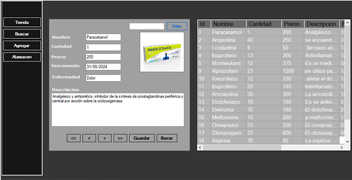
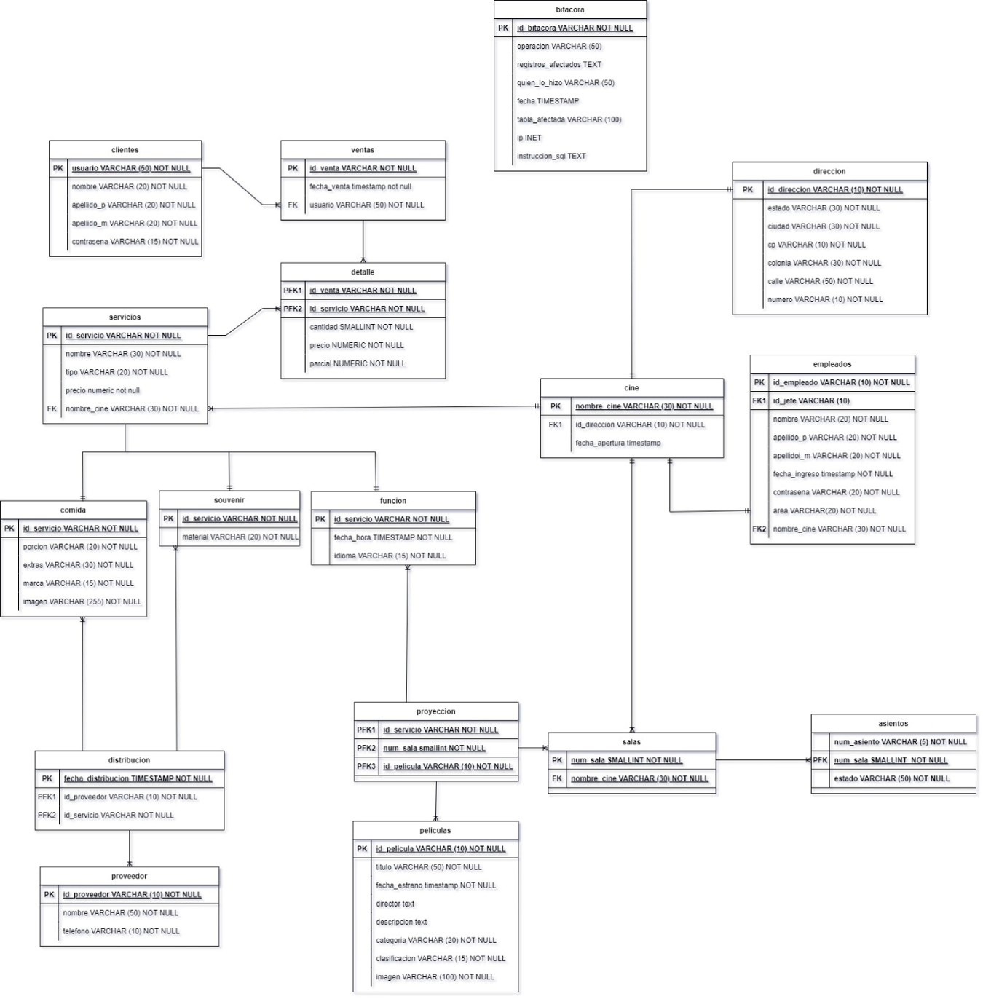
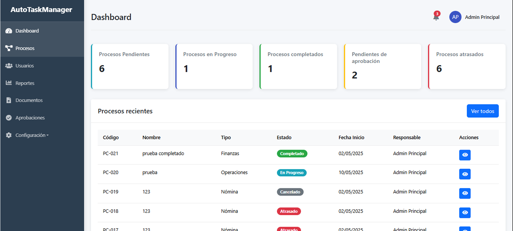
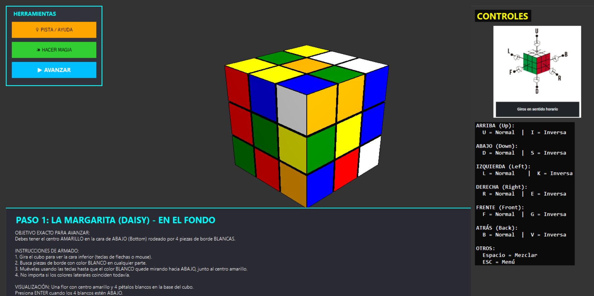
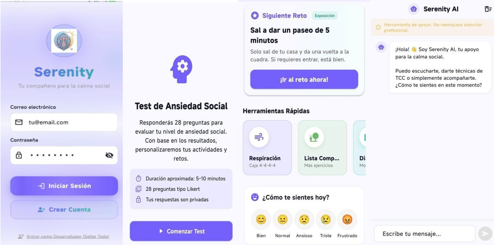
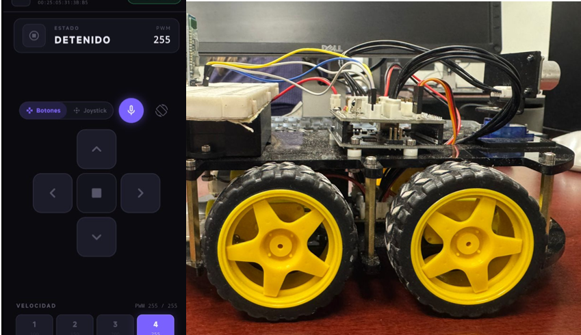

Desarrollo aplicaciones web y de escritorio, diseño bases de datos y exploro ciberseguridad aplicada. Me interesa construir cosas que funcionen bien y seguir aprendiendo en el camino.
Estudiante de 8° semestre de Ingeniería en Sistemas Computacionales con conocimientos en desarrollo web, programación y bases de datos. Manejo tecnologías como C#, HTML, CSS, JavaScript y SQL en PostgreSQL y SQL Server. Soy proactivo, responsable y con facilidad para trabajar en equipo. Me interesa seguir aprendiendo, mejorar mis habilidades técnicas y aportar soluciones a proyectos reales.
Operador de ensamble en línea de producción, asegurando calidad y eficiencia.
Captura y verificación de datos con precisión, manejo de bases de datos internas.

Aplicación para administración de inventario en farmacia, con control de existencias y movimientos.

Diseño, creación y administración de BD para sistema de cine en servidor Ubuntu.

Aplicación web para automatizar procesos administrativos y reducir trabajo manual.

Aplicación interactiva en 3D que simula y resuelve el cubo de Rubik.

Desarrollo de app móvil con funciones de inteligencia artificial para apoyo emocional.

Aplicación móvil para controlar un carro electrónico vía Bluetooth con Arduino.
8° semestre · Instituto Tecnológico de Cd. Juárez
Conalep Juárez 1